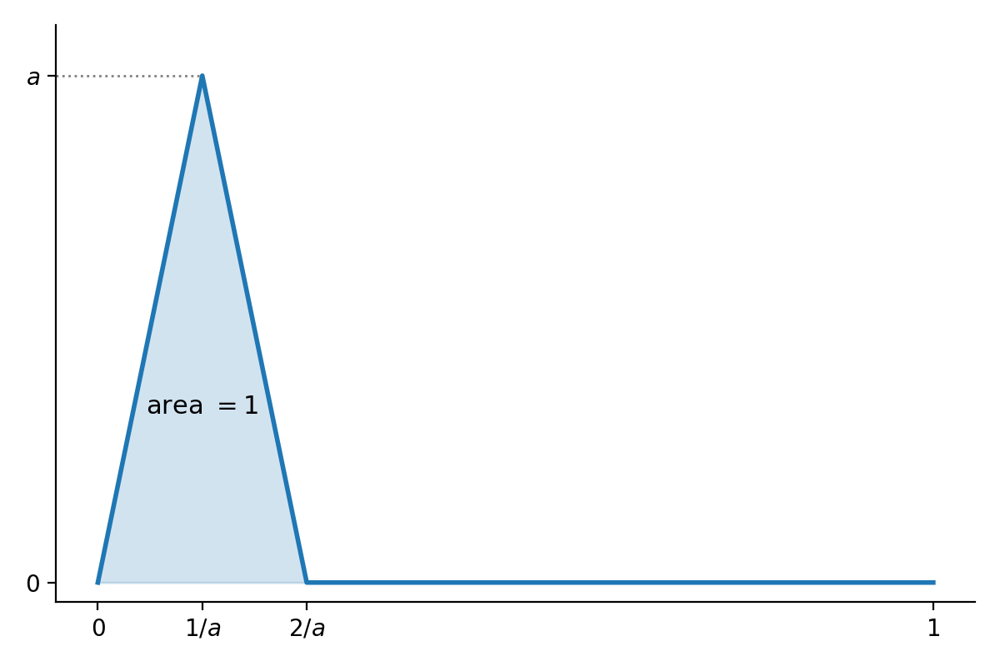

Norms and Low Rank Approximation
Math 5250 — Week 7
Overview
- Norms on vector spaces; all norms on a finite-dimensional space are equivalent.
- Matrix norms: the operator (spectral) norm and the Frobenius norm, and their relation to singular values.
- Proof that the truncated SVD A_k is the best rank k approximation in both norms.
- The Courant minimax principle.
Reference: Conrad, Computing the Norm of a Matrix.
Vector Space Norms
Norms
Let V be a vector space over F=\R or \C. A norm on V is a function \|\cdot\|:V\to\R such that:
- \|v\|\ge 0, with equality if and only if v=0;
- \|v+w\|\le\|v\|+\|w\|;
- \|cv\|=|c|\|v\| for c\in F.
Dropping “\|v\|=0 only if v=0” gives a seminorm.
A norm makes V a metric space with d(v,w)=\|v-w\|.
Two Key Examples
The sup norm relative to a basis e_1,\ldots,e_n: \Bigl\|\sum_{i=1}^{n}a_ie_i\Bigr\|_{\mathrm{sup}}=\max\{|a_1|,\ldots,|a_n|\}.
The \ell^2 (Euclidean) norm from an inner product: \|v\|=\sqrt{\langle v,v\rangle}. For the usual dot product, this gives Euclidean distance.
The Triangle Inequality for \ell^2
Cauchy–Schwarz: |\langle v,w\rangle|\le\sqrt{\langle v,v\rangle\langle w,w\rangle}. So \begin{aligned} \|v+w\|^2&=\langle v,v\rangle+2\re\langle v,w\rangle+\langle w,w\rangle\\ &\le\|v\|^2+2|\langle v,w\rangle|+\|w\|^2\\ &\le\|v\|^2+2\|v\|\|w\|+\|w\|^2=(\|v\|+\|w\|)^2. \end{aligned} Take square roots.
Equivalent Norms
Definition. Norms \|\cdot\|_a and \|\cdot\|_b on V are equivalent if there are constants A,B>0 with A\|v\|_a\le\|v\|_b\le B\|v\|_a\quad\text{for all }v\in V.
Proposition. All norms on a finite-dimensional vector space V over \R or \C are equivalent.
Strategy: fix a basis e_1,\ldots,e_n and show that any norm \rho is equivalent to \supnorm{\cdot} for that basis.
The Upper Bound
For v=\sum_{i=1}^{n}a_ie_i: \begin{aligned} \rho(v)&\le\sum_{i=1}^{n}|a_i|\rho(e_i) \le\Bigl(\sum_{i=1}^{n}\rho(e_i)\Bigr)\supnorm{v}. \end{aligned} So \rho(v)\le B\supnorm{v} with B=\sum_i\rho(e_i).
Lemma. \rho is continuous for the metric given by \supnorm{\cdot}: |\rho(x)-\rho(y)|\le\rho(x-y)\le B\supnorm{x-y}.
This much works for seminorms too. The next step needs \rho(v)=0\Rightarrow v=0.
Compactness of the Sphere
Lemma. The unit sphere S=\{v:\supnorm{v}=1\} is compact.
Proof.
- The closed ball \{\supnorm{v}\le 1\} is a finite product of intervals [-1,1] (or closed disks |z|\le 1), so it is compact.
- The open ball \{\supnorm{v}<1\} is a finite product of open intervals (or open disks), so it is open.
- S is the closed ball minus the open ball, so it is closed, hence compact. \square
The Lower Bound
\rho is continuous on the compact set S, so it attains a minimum A, and A>0 since \rho is nonzero on S.
For v\neq 0: \rho\Bigl(\frac{v}{\supnorm{v}}\Bigr)\ge A \quad\Longrightarrow\quad \rho(v)\ge A\supnorm{v}.
Altogether: A\supnorm{v}\le\rho(v)\le B\supnorm{v}.\qquad\square
Remarks and Consequences
- The key input is compactness of closed intervals in \R or closed disks in \C (Heine–Borel).
- Conrad, Equivalence of Norms: all norms on a finite-dimensional vector space over a complete valued field are equivalent.
Corollary. For finite-dimensional V, W over \R or \C:
- every linear map V\to W is continuous in any norm topology;
- bounded, open, closed and compact sets are the same for every norm.
Infinite Dimensions Are Different
On C([0,1]) consider \supnorm{f}=\sup_{0\le x\le 1}|f(x)|,\qquad \|f\|_{L^1}=\int_0^1|f(x)|\,dx.
A spike of height a and area 1 has \supnorm{f}=a and \|f\|_{L^1}=1. So there is no B with \supnorm{f}\le B\|f\|_{L^1}: the norms are not equivalent.

Matrix Norms
Matrices as Vectors
M_{n\times m}(F)\cong F^{nm}, so matrices have:
- the sup norm \supnorm{A}=\max_{i,j}|a_{ij}|;
- the Frobenius norm \frobnorm{\cdot}, the \ell^2 norm on F^{nm}.
All norms on M_{n\times m}(F) are equivalent.
The Seminorm \rho_A
For A\in M_{n\times m}(F) let \rho_A(v)=\|Av\|, where \|v\| is the \ell^2 norm on F^m and \|Av\| is the \ell^2 norm on F^n.
\rho_A is a seminorm on F^m:
- \rho_A(v)\ge 0;
- \rho_A(v+w)=\|Av+Aw\|\le\rho_A(v)+\rho_A(w);
- \rho_A(av)=|a|\rho_A(v).
So \rho_A is continuous, and \rho_A(v)\le C\|v\| for some C\ge 0.
The Operator Norm
Proposition. There is a smallest b\ge 0 with \rho_A(v)\le b\|v\| for all v.
Proof.
- The sphere \{v\in F^m:\|v\|=1\} is closed and bounded, hence compact, so \rho_A attains a maximum b=\rho_A(v_0) on it.
- For v\ne 0, \rho_A(v/\|v\|)\le b, so \rho_A(v)\le b\|v\|.
- If \rho_A(v)\le c\|v\| for all v, then taking v=v_0 gives b\le c. \square
Definition. The operator norm of A is \|A\|=\max_{v\in F^m,\ \|v\|=1}\|Av\|.
Properties of the Operator Norm
Proposition. The operator norm is a norm on M_{n\times m}(F), and for B\in M_{m\times p}(F):
- \|AB\|\le\|A\|\|B\|;
- \|A^{*}\|=\|A\|;
- \|A^{*}A\|=\|AA^{*}\|=\|A\|^2;
- |\langle Av,w\rangle|\le\|A\|\|v\|\|w\| for v\in F^m, w\in F^n;
- \supnorm{A}\le\|A\|\le\sqrt{nm}\,\supnorm{A}.
So the operator norm gives M_{n\times m}(F) the topology of F^{nm}, and M_{n\times m}(F) is complete for it.
(Conrad, Theorem 3.4.)
Proofs: Products and Inner Products
Products. \|ABv\|\le\|A\|\|Bv\|\le\|A\|\|B\|\|v\|, and \|AB\| is the smallest such constant, so \|AB\|\le\|A\|\|B\|.
Inner products. By Cauchy–Schwarz, |\langle Av,w\rangle|\le\|Av\|\|w\|\le\|A\|\|v\|\|w\|.
Proof: the Adjoint
A^{*} is the conjugate transpose (A^{\top} when F=\R). By Cauchy–Schwarz, \|Av\|^2=\langle v,A^{*}Av\rangle\le\|v\|\|A^{*}Av\|\le\|A^{*}A\|\|v\|^2. Maximize over unit v and use the product bound: \|A\|^2\le\|A^{*}A\|\le\|A^{*}\|\|A\|.
- If A\ne 0, divide by \|A\|: \|A\|\le\|A^{*}\|.
- Apply this to A^{*}: \|A^{*}\|\le\|A\|. So they are equal.
- Then \|A\|^2\le\|A^{*}A\|\le\|A\|^2.
- Applying this to A^{*} gives \|AA^{*}\|=\|A^{*}\|^2=\|A\|^2. \square
Self-Adjoint Matrices
Proposition. If A\in M_n(F) and A=A^{*}, then \|A\|=\max_{\|v\|=1}|\langle Av,v\rangle|=\max\{|\lambda|:\lambda\text{ an eigenvalue of }A\}.
The Rayleigh quotient R(v)=\frac{|\langle Av,v\rangle|}{\|v\|^2},\qquad v\ne 0, is continuous and scale invariant, so it attains a maximum \mu on the unit sphere and |\langle Av,v\rangle|\le\mu\|v\|^2\quad\text{for all }v. Since |\langle Av,v\rangle|\le\|A\|\|v\|^2, we have \mu\le\|A\|.
Proof: \|A\|\le\mu
Polarization. Since A=A^{*}, \langle A(v+w),v+w\rangle-\langle A(v-w),v-w\rangle=4\re\langle Av,w\rangle. So, using \|v+w\|^2+\|v-w\|^2=2(\|v\|^2+\|w\|^2), 4|\re\langle Av,w\rangle|\le\mu\bigl(\|v+w\|^2+\|v-w\|^2\bigr)=2\mu(\|v\|^2+\|w\|^2). For unit v,w this gives |\re\langle Av,w\rangle|\le\mu; by scaling, |\re\langle Av,w\rangle|\le\mu\|v\|\|w\|. Take w=Av: \|Av\|^2\le\mu\|v\|\|Av\|, so \|Av\|\le\mu\|v\|. Hence \|A\|=\mu.
Proof: the Eigenvalue
Choose a unit vector u with |\langle Au,u\rangle|=\|A\|, and let \alpha=\langle Au,u\rangle=\pm\|A\| (real since A=A^{*}). Then \begin{aligned} 0\le\|Au-\alpha u\|^2&=\|Au\|^2-2\alpha\langle Au,u\rangle+\alpha^2\\ &=\|Au\|^2-\alpha^2\le\|A\|^2-\alpha^2=0. \end{aligned} So Au=\alpha u, and \pm\|A\| is an eigenvalue.
Every eigenvalue satisfies |\lambda|\|v\|=\|Av\|\le\|A\|\|v\|, so \|A\|=\max_i|\lambda_i|.\qquad\square
The Spectral Norm
Corollary. For any n\times m matrix A, \|A\|=\sigma_1, the largest singular value of A.
Proof. \|A\|^2=\|A^{*}A\|, and A^{*}A is self-adjoint with eigenvalues \sigma_i^2 (and zeros). The largest is \sigma_1^2. \square
This is why the operator norm is also called the spectral norm.
The Frobenius Norm
\frobnorm{A}^2=\sum_{i,j}|a_{ij}|^2.
Lemma. The inner product \langle(a_{ij}),(b_{ij})\rangle=\sum a_{ij}\overline{b_{ij}} on M_{n\times m}(F) is \langle A,B\rangle=\trace{B^{*}A},\qquad\text{so}\qquad\frobnorm{A}^2=\trace{A^{*}A}.
Proposition. If \sigma_1\ge\cdots\ge\sigma_r are the singular values of A, then \frobnorm{A}=\sqrt{\sum_{i=1}^{r}\sigma_i^2}.
Proof. \trace{A^{*}A} is the sum of the eigenvalues of A^{*}A, which are the \sigma_i^2 and zeros. \square
The spectral norm sees the largest singular value; the Frobenius norm sees them all.
Low Rank Approximation: Proofs
The Problem
Given A\in M_{n\times m}(F), find A_k of rank at most k with
- \|A-A_k\|\le\|A-B\| (operator norm), and
- \frobnorm{A-A_k}\le\frobnorm{A-B} (Frobenius norm)
for all B of rank at most k.
The answer to both is the truncated SVD. (Following Wikipedia, Low-rank approximation.)
A and A^{*} have the same rank and norms, so assume n\le m, and let A=U\Sigma V^{*},\qquad\sigma_1\ge\cdots\ge\sigma_n\ge 0.
Two Lemmas
Let v_1,\ldots,v_m be the columns of V (the right singular vectors).
Lemma A. For 1\le j\le n, if w=\sum_{i=1}^{j}\gamma_iv_i is a unit vector, then \|Aw\|\ge\sigma_j.
Proof. \sum_{i=1}^{j}|\gamma_i|^2=1. V^{*}w has entries \gamma_1,\ldots,\gamma_j,0,\ldots,0, so h=\Sigma V^{*}w has entries \sigma_1\gamma_1,\ldots,\sigma_j\gamma_j,0,\ldots,0. Since U is unitary, \|Aw\|^2=\|Uh\|^2=\sum_{i=1}^{j}\sigma_i^2|\gamma_i|^2\ge\sigma_j^2\sum_{i=1}^{j}|\gamma_i|^2=\sigma_j^2.\qquad\square
Lemma B. Set \sigma_i=0 for n<i\le m. If w is a unit vector in the span of v_j,\ldots,v_m, then \|Aw\|\le\sigma_j.
Proof. The same computation. \square
The Operator Norm Result
Proposition. For k<n let A_k=\sum_{i=1}^{k}\sigma_iu_iv_i^{*}. Then for every B of rank at most k, \|A-B\|\ge\|A-A_k\|=\sigma_{k+1}.
Proof.
- \|A-A_k\|=\sigma_{k+1}, the largest singular value of A-A_k=\sum_{i>k}\sigma_iu_iv_i^{*}.
- Let S=\operatorname{span}(v_1,\ldots,v_{k+1}), of dimension k+1. Since B(S) has dimension at most k, rank–nullity gives a unit vector w\in S\cap\ker B.
- Then, by Lemma A with j=k+1, \|A-B\|^2\ge\|(A-B)w\|^2=\|Aw\|^2\ge\sigma_{k+1}^2.\qquad\square
The Frobenius Norm: Setup
Since the u_iv_i^{*} are orthonormal in the Frobenius inner product, \frobnorm{A-A_k}^2=\Bigl\|\sum_{i=k+1}^{n}\sigma_iu_iv_i^{*}\Bigr\|_F^2=\sum_{i=k+1}^{n}\sigma_i^2.
We must show \frobnorm{A-A_k}^2\le\frobnorm{A-B}^2 for all B of rank at most k.
Lemma (Weyl). If A=A'+A'' and i+j-1\le n, then \sigma_{i+j-1}(A)\le\sigma_i(A')+\sigma_j(A'').
Proof of Weyl’s Inequality
Note \sigma_1(A-A_i)=\sigma_{i+1}(A), with A_0=0. So, by the triangle inequality for the spectral norm, \begin{aligned} \sigma_i(A')+\sigma_j(A'')&=\sigma_1(A'-A'_{i-1})+\sigma_1(A''-A''_{j-1})\\ &\ge\sigma_1(A-A'_{i-1}-A''_{j-1}). \end{aligned}
- A'_{i-1}+A''_{j-1} has rank at most i+j-2: the column space of R+S lies in the sum of the column spaces of R and S.
- By the operator norm result with k=i+j-2, \sigma_1(A-A'_{i-1}-A''_{j-1})\ge\sigma_{i+j-1}(A).\qquad\square
The Frobenius Norm Result
Let B have rank at most k. Apply Weyl to A=(A-B)+B with 1\le i\le n-k and j=k+1: \sigma_i(A-B)+\sigma_{k+1}(B)\ge\sigma_{i+k}(A). But \sigma_{k+1}(B)=0, so \sigma_i(A-B)\ge\sigma_{i+k}(A), and \begin{aligned} \frobnorm{A-B}^2&=\sum_{i=1}^{n}\sigma_i(A-B)^2 \ge\sum_{i=1}^{n-k}\sigma_{i+k}(A)^2\\ &=\sum_{i=k+1}^{n}\sigma_i(A)^2=\frobnorm{A-A_k}^2.\qquad\square \end{aligned}
The Courant Minimax Principle
Minimax for Singular Values
Proposition. For 1\le k\le n, with S, T ranging over subspaces of F^m, \sigma_k(A)=\max_{\dim S=k}\ \min_{u\in S,\ \|u\|=1}\|Au\| =\min_{\dim T=m-k+1}\ \max_{u\in T,\ \|u\|=1}\|Au\|.
Proof of the Minimax Formulas
\ge: Take S=\operatorname{span}(v_1,\ldots,v_k). By Lemma A, \min_{u\in S,\ \|u\|=1}\|Au\|\ge\sigma_k.
\le: Let S be any subspace of dimension k, and T=\operatorname{span}(v_k,\ldots,v_m), of dimension m-k+1.
- \dim S+\dim T>m, so S\cap T contains a unit vector w.
- By Lemma B, \|Aw\|\le\sigma_k, so \min_{u\in S,\|u\|=1}\|Au\|\le\sigma_k.
Second equality: similarly, T=\operatorname{span}(v_k,\ldots,v_m) gives \le by Lemma B, and any T of dimension m-k+1 meets \operatorname{span}(v_1,\ldots,v_k), giving \ge by Lemma A. \square
Courant’s Principle
Strictly speaking, the Courant minimax principle says: if M is an m\times m Hermitian matrix with eigenvalues \lambda_1\ge\cdots\ge\lambda_m, then \begin{aligned} \lambda_k&=\max_{\dim S=k}\ \min_{x\in S,\ \|x\|=1}\langle Mx,x\rangle\\ &=\min_{\dim T=m-k+1}\ \max_{x\in T,\ \|x\|=1}\langle Mx,x\rangle. \end{aligned}
With M=A^{*}A, the eigenvalues are \sigma_i^2 and \langle Mx,x\rangle=\langle Ax,Ax\rangle=\|Ax\|^2, so our result is a special case.